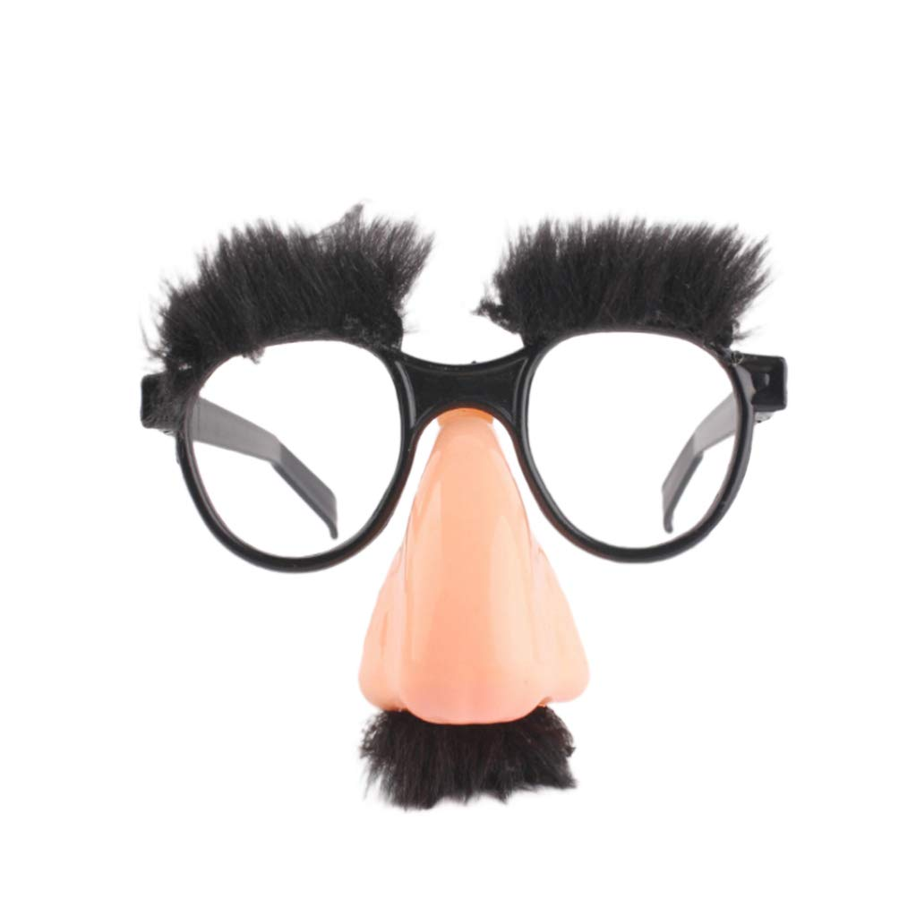

so... took another long break again. so sorry abt that... oops. life has been super insane.
so um. not with my bf from the last post anymore but we're still friends! i like being single a lot. im not an affectionate person at all i think. definitely cursed with that black cat stereotype. i stopped going 2 in person school and ive been taking online school courses since october. its a lot better than in person school. going 2 that horrific place made me wanna blow my brains out. everyone there sucked ass i hope they all end up working somewhere lame like a fkn walmart for the rest of their lives. fuck all of them!
omg something thats been insane is that this site has been getting a shit ton of traction lately, thanks 2 a bunch of ppl on pinterest! it makes me so happy to see that theres ppl out there that like this site, and that are inspired by it!! it makes me a little angry when i see ppl not like... specify that the site isnt theirs, but wtvs. im still getting views, hehe. recently hit 1 milly views too!!!
my 17th bday is soon... im super excited. ill try to keep this updated more, but i cant make any promises, sorryyy.
it has been,,, so long since ive updated this, so i have a lot to talk about. for starters, im 16 now. i took my driving permit test and i currently have a car, its kinda old but its very cute and i decorated it a bunch with pretty pink stuff!
went thru some breakups but im dating someone who treats me very well, and im happy to call him my boyfriend. we started dating on 4/27 !!! ♡ (if ur reading this, hi kaden!!! i love you!! ♡♡♡)
im also in the national honor society now, and im the president of my schools art club. not many people attend but overall its pretty fun. i also write for my schools newspaper. i also have much better friends now. not as many irl but they the ones i have treat me very well :) im doing a lot better mentally. ive been struggling with what i think are delusions for the past few months but its settling down now.
i quit marching band for about a year, i got into a bunch of drama with some of the members and maybe im glad im not close with them anymore, i dont think some of them are very good people. im surrounding myself with people who actually care about me now and honestly i dont think i could be happier. while im taking a break from marching band im gonna try to learn drum set, and im gonna do wind ensemble if im able to!
today was one of the worst days this school year, for reasons i dont want to talk about. but!! i got a rubber ball and disguise glasses with eyebrows and a mustache that goes up and down from my art teacher!! if you dont know what im talking about, heres an image:

today was the first day of school after a 3 day weekend bc of memorial day!! i've been kinda struggling lately mentally but thankfully school's almost out, and i'll have time to work on myself.
band camp starts in august and its. 8 hours everyday for two weeks.... i love marching band but god thats gonna suck bc where i live its SUPER hot in the summers. as for life right now, nothings been happening much. ive been trying to keep my room clean which has been a little bit of a chore but its not too bad! i have a ton of missing assignments that ive been working on since i got sick a few weeks ago... had to stay home the WHOLE WEEK bc it took ages to get better!!!
im super excited for next year tho bc i get to be a teacher aid for my digital arts teacher!!! soo stoked bc its basically easy credits and it'll help bc im taking an ap course for next year, which is my sophomore year! i dont plan on skipping class and the grade for being a teacher aid is purely attendance based :3